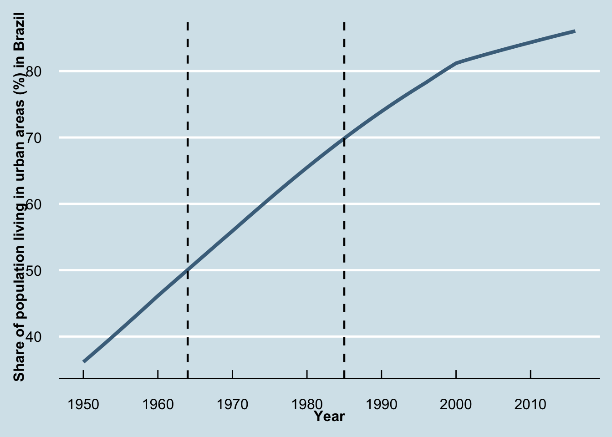
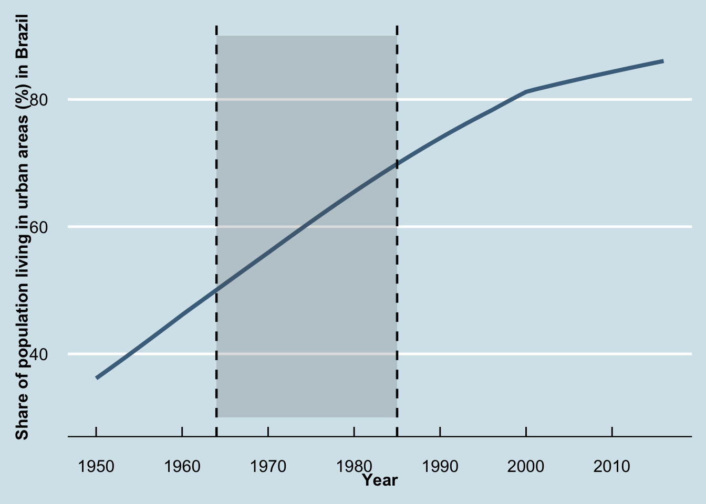
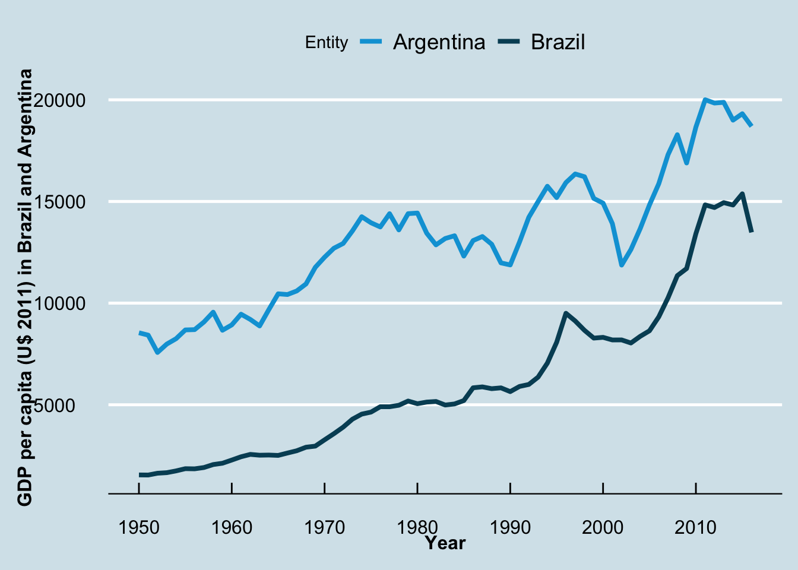

library(tidyverse)
urban_gdp<-read_csv("urbanization_gdp.csv", col_names=T)4 Data Visualization with Tidyverse
4.1 Line Plots
Line plots give you a good understanding about how variables evolve over time. Let’s see how simple line plots work using ggplot2() and some options available to customize these graphs. In this exercise, we will use with urbanization and per capita income information about a bunch of countries from Our World in Data. The first step is to import this .csv file:
One can check the evolution of the share of urban population (%) in Brazil, from 1945 to 2016 filtering the full dataset
brazil<-urban_gdp%>%
filter(Entity=="Brazil")%>%
arrange(Year)%>%
filter(Year>=1950)Working with the filtered data, use ggplot package to create line plots. The package ggthemes allows you to customize the chart appearance. For this exercise, I will use theme_economist. The basic line plot works with geom_line(), and you can easily set the line type and its size. theme() adjust the size of the label in the axis, and scale_x_continuous() gives you some freedom to establish the years that appear in the x axis.
library(ggthemes)
ggplot(data=brazil,
aes(x=Year,y=`Share of population living in urban areas (%)`))+
geom_line(size=1.4, color="skyblue4")+
labs(x = "Year", y="Share of population living in urban areas (%) in Brazil")+
theme_economist(base_size = 14) +
scale_colour_economist()+
scale_x_continuous(breaks = seq(from = 1950, to =2016 , by =10))+
theme(axis.text=element_text(size=12),
axis.title=element_text(size=12,face="bold"))Sometimes you need to highlight a certain date or period, and vertical lines come in handy. For instance, Brazil was under Military dictatorship from 1964 to 1985. Using geom_vline(), it is possible to add vertical lines:
ggplot(data=brazil,
aes(x=Year,y=`Share of population living in urban areas (%)`))+
geom_line(size=1.4, color="skyblue4")+
labs(x = "Year", y="Share of population living in urban areas (%) in Brazil")+
theme_economist(base_size = 14) +
scale_colour_economist()+
scale_x_continuous(breaks = seq(from = 1950, to =2016 , by =10))+
theme(axis.text=element_text(size=12),
axis.title=element_text(size=12,face="bold"))+
geom_vline(aes(xintercept =1964),
linetype=2, colour="black", size=.8)+
geom_vline(aes(xintercept =1985),
linetype=2, colour="black", size=.8)
It is also possible to add a colored box between periods with annotate(). You will need to define the size of the rectangle with xmin, xmax, ymin, ymax, and the transparency choosing alpha.
ggplot(data=brazil,
aes(x=Year,y=`Share of population living in urban areas (%)`))+
geom_line(size=1.4, color="skyblue4")+
labs(x = "Year", y="Share of population living in urban areas (%) in Brazil")+
theme_economist(base_size = 14) +
scale_colour_economist()+
scale_x_continuous(breaks = seq(from = 1950, to =2016 , by =10))+
theme(axis.text=element_text(size=12),
axis.title=element_text(size=12,face="bold"))+
geom_vline(aes(xintercept =1964),
linetype=2, colour="black", size=.8)+
geom_vline(aes(xintercept =1985),
linetype=2, colour="black", size=.8)+
annotate("rect", xmin = 1964, xmax = 1985,
ymin = 30, ymax = 90,
alpha = .2)
There are some options in case you want to display multiple units in the same plot. Here we will leverage col inside aes() to differentiate Brazil and Argentina. Note that a legend was created on the top.
br_ar<-urban_gdp%>%
filter(Entity=="Brazil"|Entity=="Argentina")%>%
arrange(Year)%>%
filter(Year>=1950)
ggplot()+
geom_line(data=br_ar,
aes(x=Year, y=`GDP per capita (2011 int-$) ($)`, col=Entity),
size=1.4)+
labs(x = "Year", y="GDP per capita (U$ 2011) in Brazil and Argentina")+
theme_economist(base_size = 14) +
scale_colour_economist()+
scale_x_continuous(breaks = seq(from = 1950, to =2016 , by =10))+
theme(axis.text=element_text(size=12),
axis.title=element_text(size=12,face="bold"))
Depending on how the data is structure, you might need to use multiple geom_lines() or reshape the dataset (check these examples).
4.1.1 Exercise I: Germany’s GDP per capita evolution
Plot Germany’s GDP per capita evolution and add a vertical dashed line at 1989 choosing a different theme - check the options here.
4.1.2 Exercise II: Urbanization in US and China
Plot the urbanization rates from both the US (in darkblue) and China (in red), from 1930 to 2016.
Hint: It is possible to customize the colors adding the line scale_color_manual("", values=c("red", "darkblue"))
4.2 Scatterplots
Using scatter plots, you can see the extent to which two variables are associated, and it is a very compelling way to show simple correlations. For example, one can argue that per capita income goes along with urbanization - as countries urbanize, they get richer. To construct a scatter plot between those two variables for 2016, we filter the entire dataset (urban_gdp) for Year==2016.There are entities without information about GDP per capita, and we drop those NA’s. If you look at the data, you will realize that when an Entity has Code equal to NA, the entity is not actually a single country, and we also want to drop those data points. Finally, we dropped the entity World because we only want to work with countries.
As you can see, cleaning the data is a crucial step before plotting. Finally, I will rename columns 4 and 5 and create a new variable applying the natural logarithm to the GDP per capita.
urban_gdp_16<-urban_gdp%>%filter(Year==2016)
urban_gdp_16<-urban_gdp_16%>%drop_na(Code, `GDP per capita (2011 int-$) ($)`)
urban_gdp_16<-urban_gdp_16%>%filter(Entity!="World")
names(urban_gdp_16)[4]<-"urban_pop"
names(urban_gdp_16)[5]<-"gdp"
urban_gdp_16$ln_gdp<-log(urban_gdp_16$gdp)
head(urban_gdp_16,3)# A tibble: 3 × 7
Entity Code Year urban_pop gdp `Total population (Gapminder)` ln_gdp
<chr> <chr> <dbl> <dbl> <dbl> <dbl> <dbl>
1 Afghanistan AFG 2016 25.0 1929 NA 7.56
2 Albania ALB 2016 58.4 11285 NA 9.33
3 Algeria DZA 2016 71.5 13328 NA 9.50Back to ggplot()! Instead of geom_line(), we use geom_point() to construct scatter plots:
ggplot(urban_gdp_16,
aes(x=urban_pop, y=ln_gdp)) +
geom_point(color="darkgrey") +
scale_x_continuous(name = "Share of population living in urban areas (%)") +
scale_y_continuous(name = "Ln GDP per capita U$") +
theme_economist_white(base_size = 17, gray_bg=FALSE)+
theme(axis.text=element_text(size=12),
axis.title=element_text(size=12,face="bold"))You can do better than that. The package ggrepel allows you to label the dots in your chart (function geom_text_repel()). I will label the dots with respective country codes. Finally, stat_smooth() adds the regression line to your plot:
#install.packages("ggrepel")
library(ggrepel)
ggplot(urban_gdp_16,
aes(x=urban_pop, y=ln_gdp)) +
geom_point(color="darkgrey") +
geom_text_repel(aes(label=Code), size=3)+
stat_smooth(method = "lm", formula =y~x, se=F, color="black") +
scale_x_continuous(name = "Share of population living in urban areas (%)") +
scale_y_continuous(name = "Ln GDP per capita U$") +
theme_economist_white(base_size = 17, gray_bg=FALSE)+
theme(axis.text=element_text(size=12),
axis.title=element_text(size=12,face="bold"))Here we see the strong and positive relationship between the share of the population living in urban areas (%) and the GDP per capita (in U$) for 164 selected countries. For more facts about urbanization, check Our World in Data.
4.2.1 Exercise III:
Here you have ACS 2015-19 data about the percentage of people living below the poverty line in census tracts within the Chicago metro area. Let’s look at the relationship between poverty levels and distance from the city center, constructing a scatter plot with those variables (y-axis perc_pov and x-axis dist_km). Do the same but use income in the y-axis instead and keep dist_km on the x-axis. Store both scatter plots (as plot1 and plot2). Install the package patchwork and sum both objects (literally, plot1+plot2) to display them side-by-side.